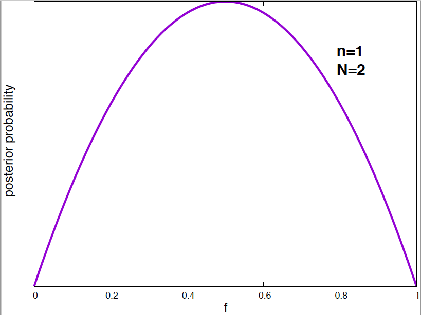
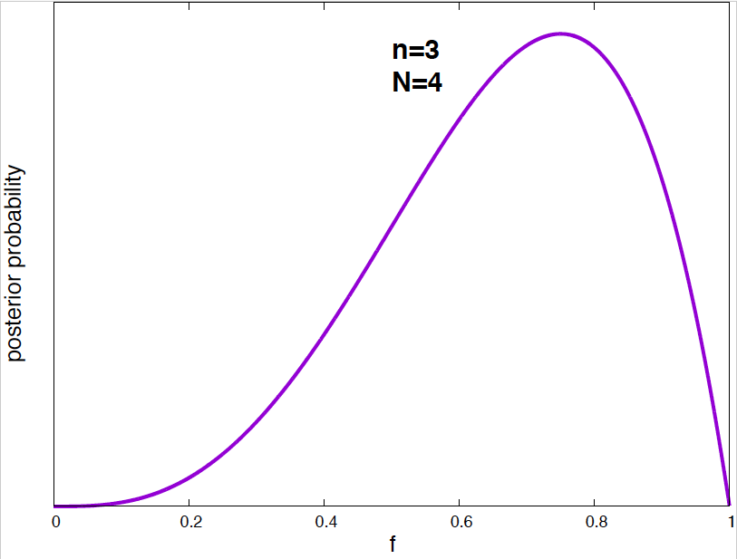
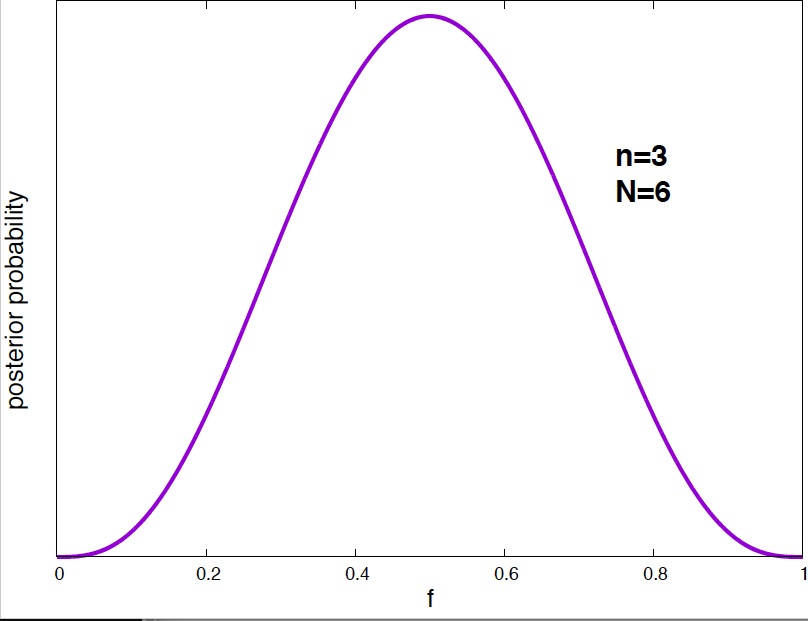
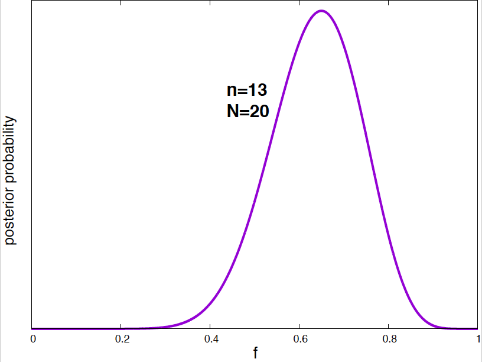
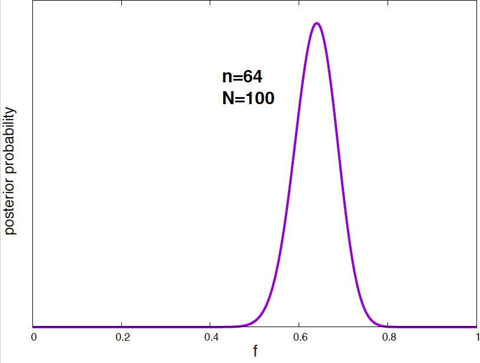

MCB111: Mathematics in Biology (Fall 2024)
- An example: bacterial mutation wait times
- Probabilities used to quantify degrees of belief
- Forward probabilities and inverse probabilities
- Notation: likelihood and priors
- Using posterior probabilities to make subsequent predictions
- Parameter’s best estimates and confidence intervals
- Best estimates and confidence intervals for the bacterial mutation wait times
week 02:
Probability and inference of parameters
For this topic, MacKay’s Chapter 3 is a good source, also MacKay’s lecture 10, and Sivia’s Chapter 2. I would also read this short article ``What is Bayesian statistics’’ by S. R. Eddy
An example: bacterial mutation wait times
Bacteria can mutate spontaneously from virus sensitive to virus resistant. This was demonstrated in a hugely important 1943 paper by Luria and Delbruck. Luria and Delbruck showed that the change to virus resistance was not the result of being in contact with the virus (acquired immunity), but due to mutations that occurred spontaneously and independently of the presence of the virus.
In a large bacterial colony, we have a visual method to identify when individual bacterium become resistant. After a bacterium mutates, it changes color, and we can record the event. Once mutated the bacteria do not revert to their original virus-sensitive state. We assume that each bacterium can mutate independently from each other, and we want to estimate a expected mutation wait time before becoming virus resistant.
In a particular experiment in which we observe mutation events that occur in a window of time from \(t=1\) to \(t=20\) minutes, we observe \(N= 6\) bacteria that mutated at times
\[1.2, 2.1, 3.4, 4.1, 7, 11 \mbox{mins.}\]We can assume that the probability that a bacterium mutates and becomes virus resistant after time \(t\) follows an exponential decay,
\begin{equation} e^{- t/\lambda}, \end{equation}
where we call \(\lambda\) the mutation rate. The rate parameter \(\lambda\) has dimensions of time.
A short aside on Poisson processes
This bacterial example is a particular realization of a Poisson process. In a Poisson process, a parameter \(\lambda>0\) determines the rate of events occurring per unit time. All events are considered to be independent from each other.
There are several questions that you can ask about a Poisson process, each controlled by a different distribution
-
Time (\(t\)) to first event, The exponential distribution
\[P(t) = \frac{1}{\lambda}\ e^{-t/\lambda}\] -
Time (\(t\)) to the \(r^{\mbox{rt}}\) event, The Gamma distribution
\[P(t) = \frac{t^{r-1}}{\lambda^r} \frac{e^{-t/\lambda}}{\Gamma(r)}\] -
Number of events (\(n\)) in a time period \(t\), The Poisson distribution
\[P(n) = \frac{(t/\lambda)^n}{n!}\ e^{-t/\lambda}\]
What can we say about the mutation parameter \(\lambda\)?
If the observation time were infinity, we remember that the exponential distribution has mean \(\lambda\), and we could use the sample mean as a proxy for the value of the mutation rate \(\lambda\).
The sample mean is
\begin{equation} \frac{1.2+2.1+3.4+4.1+7+11}{6} = 4.97. \end{equation}
This estimation does not tell us anything about mutations that occur after \(t=20\) mins, which can happen, so we know this is an underestimation of \(\lambda\), but by how much?
Let’s try to do some inference on the mutation parameter \(\lambda\). We can write down the probability (density) of a bacterium mutating after time \(t\) as
\[\begin{equation} P(t\mid \lambda) =\left\{ \begin{array}{ll} e^{- t/\lambda} / Z(\lambda) & 0<t<20\\ 0 & \mbox{otherwise} \end{array} \right. \end{equation}\]where normalization imposes \begin{equation} Z(\lambda) = \int_0^{20} e^{- t/\lambda} dt = \left. -\lambda e^{- t/\lambda}\right|_{t=0}^{t=20} = \lambda(1 - e^{-20/\lambda}). \end{equation}
Figure 1. The probability density as a function of t, for different values of the mutation parameter.
If we observe \(N\) individual bacterium that have mutated at times \(t_1, t_2,\ldots t_N\), since they are all independent
\begin{equation} P(t_1,\ldots t_N\mid \lambda) = \prod_i P(t_i\mid \lambda) = \frac{e^{-\sum_i t_i/\lambda}}{Z^N(\lambda)} \end{equation}
Using Bayes theorem, we have \begin{equation} P(\lambda\mid t_1,\ldots t_N) = \frac{P(t_1,\ldots t_N\mid \lambda) P(\lambda)}{P(t_1,\ldots t_N)} \propto \frac{e^{-\sum_i t_i/\lambda}}{Z^N(\lambda)} P(\lambda). \end{equation}
Now, we have turned around what was the probability of the data given the parameter \(\lambda\) into a probability for the parameter itself, given the data.
What does this function of \(\lambda\) tells us?
We can plot \(P(t \mid \lambda)\) as a function of time for different values \(\lambda\), which is the standard way to look at the exponential distribution (Figure 1). But, we can also plot \(P(t_1,\ldots, t_N\mid \lambda)\) as a function of \(\lambda\) for our particular example, \(\{t_i\}_1^6=\{1.2,2.1,3.4,4.1,7,11\}\), (Figure 2).

Figure 2. The probability of the data given the model (aka. the likelihood) as a function of the mutation parameter. The maximal probability corresponds to a mutation rate of 5.5.
From this distribution, we already get a clear picture of which are the most favorable values of the parameter \(\lambda\). From this distribution, you can calculate, for instance, the value of \(\lambda\) that maximizes the probability of the data, which is \(\lambda^\ast = 5.5\) (larger than the sample mean which is \(4.97\)).
This is what we can do using Bayes’ theorem: obtain information about the parameters of the model (in this case \(\lambda\)) based on what the data tells us \(P(t_1,\ldots t_6\mid \lambda)\).
Probabilities used to quantify degrees of belief
The mutation wait time \(\lambda\) has a unique value (within a fixed bacterial environment) that correctly describes the process. We use a probability distribution to describe \(\lambda\), but that does not mean that we think it is an stochastic process. Different values of \(\lambda\) represent mutually exclusive alternatives, of which only one is true. \(P(\lambda\mid \mbox{data})\) represent our beliefs (or state of knowledge) for each one of those alternative values given the data and the assumptions. We call this a posterior probability of the parameter, given the data and the assumptions.
There is an interesting historical precedent. Pierre-Simon Laplace (1749-1827) astronomer and mathematician used his probability theory (Laplace rediscovered Bayes’ theorem on his own) to determine a probability distribution for the mass of Saturn, based on different observations of Saturn’s orbit from different observatories. Obviously, Saturn’s mass is not a random variable from which we could sample. Laplace’s probability distribution (which is Gaussian-like) is a posterior probability for the mass of Saturn based on existing knowledge \(P(M\, \mbox{Saturn}\mid \mbox{data})\). Laplace’s estimate of Saturn’ mass based on that posterior distribution only differs from the modern value by about 0.5%.
Forward probabilities and inverse probabilities
Given the assumptions listed above (bacterium mutation times follow a exponential distribution) that we represent by \(H\), and the data (the six-point dataset) that we represent by \(D\), the posterior probability of the parameter \(\lambda\) is \begin{equation} P(\lambda\mid D, H) = \frac{P(D\mid \lambda, H) P(\lambda) }{P(D\mid H)}. \end{equation}
This result shows that probabilities can be used in two different ways:
-
Forward probabilities. They describe frequencies of outcomes in random experiments. They require a generative (probabilistic) model, from which we can calculate the probabilities of quantities produced by the process. These quantities can be sampled.
-
Inverse probabilities They also requires a generative (probabilistic) model, but an inverse probabilities refers to a quantity not directly produced by the process. For any such derivative quantity, we calculate its conditional probability given the observed quantities. Inverse probabilities require the use of Bayes theorem.
Sivia represents these two situations with a graph in his book (Figure 1.1) that I reproduce here.
Notation: likelihood and priors
If \(\lambda\) denotes the unknown parameters, \(D\) denotes the data, and \(H\) the overall hypothesis, the equation
\begin{equation} P(\lambda\mid D, H) = \frac{P(D\mid \lambda, H) P(\lambda\mid H) }{P(D\mid H)} \end{equation}
is written as
\begin{equation} \mbox{posterior}\quad = \quad \frac{\mbox{likelihood}\,\times\,\mbox{prior}}{\mbox{evidence}} \end{equation}
Some important points:
-
Priors are not an ``initial guess’’ of the value of the parameters. Specifying a prior is providing a whole probability distribution over all values of the parameter(s), not singling out one particular value.
Priors are the more subjective part of the inference process. If you have no other input, the maximum entropy principle tells you you should use a uniform distribution as the prior distribution.
In our previous example, a uniform prior would mean \(P(\lambda) = 1\) so that \(\int_0^1P(\lambda) = 1\).
-
The value of the evidence is not important. The evidence, \(P(D\mid H)\), does not depend on the parameters, and oftentimes it is left uncalculated if you are only interested in the relative posterior probabilities of the parameters. The evidence can be calculated by marginalization as \begin{equation} P(D\mid H) = \int_{\lambda} P(D\mid \lambda, H)\ P(\lambda\mid H)\ d \lambda. \end{equation} In week03’ lectures, we will use the evidence when comparing different models.
-
Never say ‘the likelihood of the data’. You can refer to \(P(D\mid \lambda, H)\) as the likelihood of the parameters or more correctly the likelihood of the parameters given the data. ``Likelihood’’ means that as a function of the parameters it is NOT a probability distribution (does not sum to one over all values of the parameters, but for a given value of the parameters it does sum to one for all data).
I prefer to always refer to \(P(D\mid \lambda, H)\) as the probability of the data given the parameters.
-
The likelihood principle. Given a generative model for data \(D\) given parameters \(\lambda\), \(P(D\mid \lambda)\), and having observed a particular outcome \(D_1\), all inferences and predictions should be based only on the function \(P(D_1\mid \lambda)\).
This looks deceivingly simple, but many classical statistical test fail to obey it, as they introduce additional and obscure assumptions not part of the generative process.
Using posterior probabilities to make subsequent predictions
Another example: the effectiveness of a new mRNA vaccine
A new mRNA vaccine for a plague is tested on a group of volunteers. From a group of \(N\) subjects, \(n\) are disease free a year after their vaccination.
What is the probability \(f\) that the vaccine is effective?
The probability, given \(f\), that \(n\) subjects have not contracted the disease is given by the binomial distribution \begin{equation} P(n \mid N, f) = {N\choose n} f^{n} (1-f)^{N-n} \end{equation}
The posterior probability of \(f\) is, \begin{equation} P(f\mid n,N) = \frac{P(n,N\mid f) P(f)}{P(n,N)}. \end{equation}
The evidence (not dependent on \(f\)) is given by \begin{equation} P(n\mid N)= \int_0^1 P(n,N\mid g)\, P(g)\,dg. \end{equation}
If we assume an uniform prior \(P(f)=1\), \begin{equation} P(f\mid n,N) = \frac{f^{n} (1-f)^{N-n}}{\int_0^1 g^{n} (1-g)^{N-n}\,dg}. \end{equation}
The denominator is the beta function and has a nice analytical expression, and it is important to know \begin{equation} \int_0^1 g^{n} (1-g)^{N-n} \, dg = \frac{n!(N-n)!}{(N+1)!} \end{equation}
Our inference for \(f\) is then \begin{equation} P(f\mid n,N) = \frac{(N+1)!}{n!(N-n)!}f^{n} (1-f)^{N-n}. \end{equation}
For the case \(N=10\) and \(n=6\), this posterior probability of \(f\) is given in Figure 3.
Figure 3. Posterior probability density for the mRNA vaccine success frequency given the data of N=10 total subjects and n=6 plague free subjects.
We can calculate the most probable value of \(f\) (i.e. the value that maximizes the posterior probability density), and the mean value of \(f\). This is going to be part of your homework this week.
Now, we can use the posterior probability distribution of \(f\) to make predictions.
Given the pilot test we have done so far for this mRNA vaccine, you would like to estimate the probability that a new subject would be plague free after treatment with the vaccine.
The probability of finding one disease free subject is \(f\), the mean of \(f\) respect to the posterior distribution of \(f\) is then
\begin{equation} P(\mbox{next subject plague free}\mid n,N) = \int_0^1 f \times P(f\mid n, M) df \end{equation}
Notice that we are not putting our bets in one particular value of the probability parameter, instead we integrate over all possible values of \(f.\) This has the effect of taking into account our uncertainty predicting \(f\). This concept is at the heart of Bayesian inference.
The solution is
\[\begin{aligned} P(\mbox{next subject plague free}\mid n,N) &= \frac{(N+1)!}{n!(N-n)!} \int_0^1 f \times f^n(1-f)^{N-n} df\\ &= \frac{(N+1)!}{n!(N-n)!} \int_0^1 f^{n+1}(1-f)^{N-n} df\\ &= \frac{(N+1)!}{n!(N-n)!}\frac{(n+1)!(N-n)!}{(N+2)!} = \frac{n+1}{N+2}. \end{aligned}\]This result is known as Laplace’s rule.
For \(N=10\) subjects and \(n=6\),
\[\begin{aligned} P(\mbox{next subject plague free}\mid n=6,N=10) &= \frac{7}{12} = 0.58. \end{aligned}\]This is a way in which Bayesian statistics is different from classical statistics. In classical statistics, once you run a ``test’’ that accepts a model at some significance level, then one uses exclusively that model to make predictions. Here, we have make our next prediction, considering (integrating) over all possible values of the effectiveness parameter.





Figure 4. Posterior probability distribution for the vaccine effectiveness frequency f for different data. As the number of data points increases, the probability distribution narrows around the optimal value of the parameter.
It is interesting to see how the posterior probability distribution changes as the amount of data increases. In Figure 4, I show a few examples for our vaccine example. Notice, that by the time I have just 2 data points, I can already say a lot about the value of \(f\). As the amount of data increases, the posterior distributions narrows around the true value.
Note on marginalization:
We have found an example of marginalization when calculating the evidence, that is, the probability of the data given the hypothesis that the results follow a Binomial distributions \(P(D\mid H)\), where the data D is that \(n=6\) out of \(N=10\) individuals suffer no disease after one year.
The hypothesis is characterized by the effectiveness of the vaccine \(f\), but if all we care about is the hypothesis itself, and not the actual value of \(f\), then, the effectiveness is a variable that we integrate out
\[P(n \mid N, H) = \int_0^1 P(n\mid N, f, H)\ P(f\mid H)\ df.\]Assuming a uniform distribution for the prior \(P(f\mid H)\), we have
\[\begin{aligned} P(n \mid N, H) &= \frac{N!}{n! (N-n)!}\ \int_0^1 f^n\ (1-f)^{N-n}\ df\\ &=\frac{N!}{n! (N-n)!}\ \frac{n! (N-n)!}{(N+1)!}\\ &= \frac{1}{N+1}. \end{aligned}\]Where we have used the result for the beta function given earlier.
Note on probability densities.
Figure 5. Posterior probability density and cumulative probability for the effectiveness of a mRNA vaccine. For N=10 subjects, and n=6 plague free after one year.
We have calculated the posterior probability density for the effectiveness of the mRNA vaccine as
\[P(f\mid n, N, H) = \frac{(N+1)!}{n!(N-n)!}\ f^n (1-f)^{N-n}\]If we plot this probability density function (PDF) (for \(n=6\) and \(N=10\)), we see that for many values of \(f\) their pdf is larger than one! (see Figure 5).
Yet, the cumulative probability distribution (CDF), defined as the probability that the value is less than or equal to f,
\[0\leq CDF(f) = \int_0^f P(f^\prime \mid n, N, H)\ df^\prime \leq 1,\]is properly bound (see Figure 5). That is because of the other term in the integrand (\(df^\prime\)) that correspond to the width that defines the infinitesimal area to sum. The product of the two term is such that as a result, the CDF is bound to be smaller than one for any value of \(f\).
So, to interpret the actual value of the posterior probability for the effectiveness parameters, as with sampling, you want to look at the CDF. One can ask for instance, what is the probability that the effectiveness is \(0.6\pm 0.001\)?
That is given by
\[CDF(f=0.601) - CDF(f=0.599) = 0.5369 - 0.5314 = 0.0052.\]Parameter’s best estimates and confidence intervals
We have had a taste of how posterior probabilities convey information about the value of the parameters given the data. Often, we would like to summarize the information in the posterior probability distributions into the best estimate (the maximum likelihood value), and its reliability (the standard deviation around the best estimate).
We can tell a lot about confidence intervals, by doing a Taylor expansion around the maximum likelihood estimate.
We have calculated a posterior probability density for our parameters \(\lambda\) given the data \(D\) and the hypothesis \(H\) \begin{equation} P(\lambda\mid D, H) \end{equation}
the best estimate of \(\lambda\) is the one that satisfies
\[\begin{equation} \left. \frac{d P(\lambda\mid D, H)}{d\lambda} \right|_{\lambda = \lambda_{\ast}} = 0. \end{equation}\]Let’s now consider the function \(L=\log P(\lambda\mid D, H)\) instead of the probability itself. Because \(L(\lambda)\) and \(P(\lambda)\) are both monotonically increasing positive functions, a optimal value of \(p\) is also an optimal value of \(L\), and it is easier to work with \(L\) than with \(P\). A Taylor expansion around \(\lambda_{\ast}\) tells us
\[\begin{aligned} L &= L(\lambda_{\ast}) + \left.\frac{d L}{d\lambda}\right|_{\lambda_{\ast}} (\lambda-\lambda_{\ast}) + \left.\frac{1}{2}\frac{d^2L}{d\lambda^2}\right|_{\lambda_{\ast}} (\lambda-\lambda_{\ast})^2 + \dots\\ &= L(\lambda_{\ast}) + \left.\frac{1}{2}\frac{d^2L}{d\lambda^2}\right|_{\lambda_{\ast}} (\lambda-\lambda_{\ast})^2 + \dots. \end{aligned}\]The linear term is zero, because we are expanding around a maximum. Next comes The quadratic term. Thus ignoring higher orders, we have a Gaussian distribution to approximate the posterior as
\[\begin{equation} P(\lambda\mid D, H) \propto e^{\left.\frac{1}{2}\frac{d^2L}{d\lambda^2}\right|_{\lambda_{\ast}}(\lambda-\lambda_{\ast})^2} = e^{-\frac{(\lambda-\lambda_{\ast})^2}{2\sigma^2}} \end{equation}\]where \(\sigma\) is given by
\[\begin{equation} \frac{1}{\sigma^2} =- \left.\frac{d^2L}{d\lambda^2}\right|_{\lambda_{\ast}}. \end{equation}\]which is positive because as \(\lambda_{\ast}\) is a maximum, the second derivative has to be negative.
Best estimates and confidence intervals for the bacterial mutation wait times
Let’s calculate the best estimate and confidence interval for the posterior distribution of the exponential problem we started with of the time between mutations in a bacterial colony.
The posterior probability density for the time parameters \(\lambda\) was \begin{equation} P(\lambda\mid {t_1,\ldots,t_N}) = A \frac{e^{-\mu N/\lambda}}{\lambda^N\ (1-e^{-20/\lambda})^N} \end{equation} where \(\mu = \frac{1}{N}\sum_i t_i\) is the mean of the given waiting times, and the normalization constant \(A\) is independent of \(\lambda\).
The log of the posterior \(L=\log P(\lambda\mid N, \mu)\) is given by \begin{equation} L = \log A+ \frac{-\mu N}{\lambda} - N\ \log{\lambda} - N\ \log(1-e^{-20/\lambda}). \end{equation}
For simplicity sake, we are going to ignore the last term. If instead of measuring for 20 minutes, we’ve done it for a much longer period of time \(\log(1-e^{-{(t>>20)}/\lambda})\sim log(1) = 0\), and then \begin{equation} L = \log A+ \frac{-\mu N}{\lambda} - N\ \log{\lambda}. \end{equation}
The derivative respect to \(\lambda\) is
\begin{equation} \frac{d L}{d\lambda} = \frac{N\mu}{\lambda^2} - \frac{N}{\lambda}. \end{equation}
The value of \(\lambda\) that maximized the log probability is given by
\[\begin{equation} \frac{N\mu}{\lambda^2_\ast} - \frac{N}{\lambda_\ast} = 0, \end{equation}\]or
\begin{equation} \lambda_\ast = \mu. \end{equation}
The second derivative is
\begin{equation} \frac{d^2 L}{d\lambda^2} = \frac{-2N\mu}{\lambda^3} +\frac{N}{\lambda^2} = \frac{N}{\lambda^2}\left(1-2\frac{\mu}{\lambda}\right), \end{equation}
and the standard deviation is given by
\[\begin{equation} \frac{1}{\sigma^2} = - \left.\frac{d^2 L}{d\lambda^2}\right|_{\lambda_\ast} = \frac{N}{\lambda^2_\ast} \end{equation}\]or
\begin{equation} \sigma = \frac{\mu}{\sqrt{N}}. \end{equation}
Figure 6. Posterior probability of the mutation wait time (for a slightly simplified case in which the observation time is very large) and its Gaussian approximation around the maximal value that estimates the value of the parameter to be 4.97 +/- 2.03.
Thus our estimation of the parameter \(\lambda\) is given by
\[\lambda \approx \mu \pm \frac{\mu}{\sqrt{N}}\]where \(\mu = \frac{\sum_i t_i}{N}\) is the sample mean.
This results is much more general that how we have deduced it here:
The error in the derivation of our parameters estimates is always proportional to the inverse of the square root of the amount of data.
So, whichever experiment you are running, always be mindful of this quantity
\begin{equation} \frac{1}{\sqrt{N}}. \end{equation}
In Figure 6, I present the Gaussian approximation and the standard deviation compared with the actual posterior distribution for the bacterial mutation wait time.